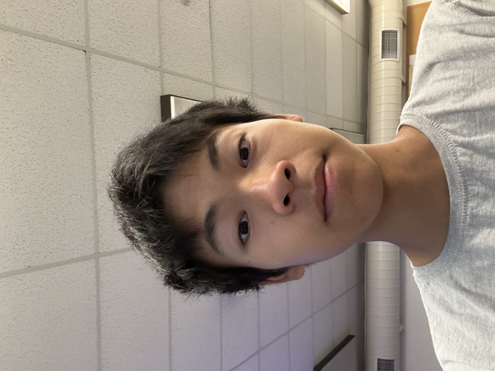
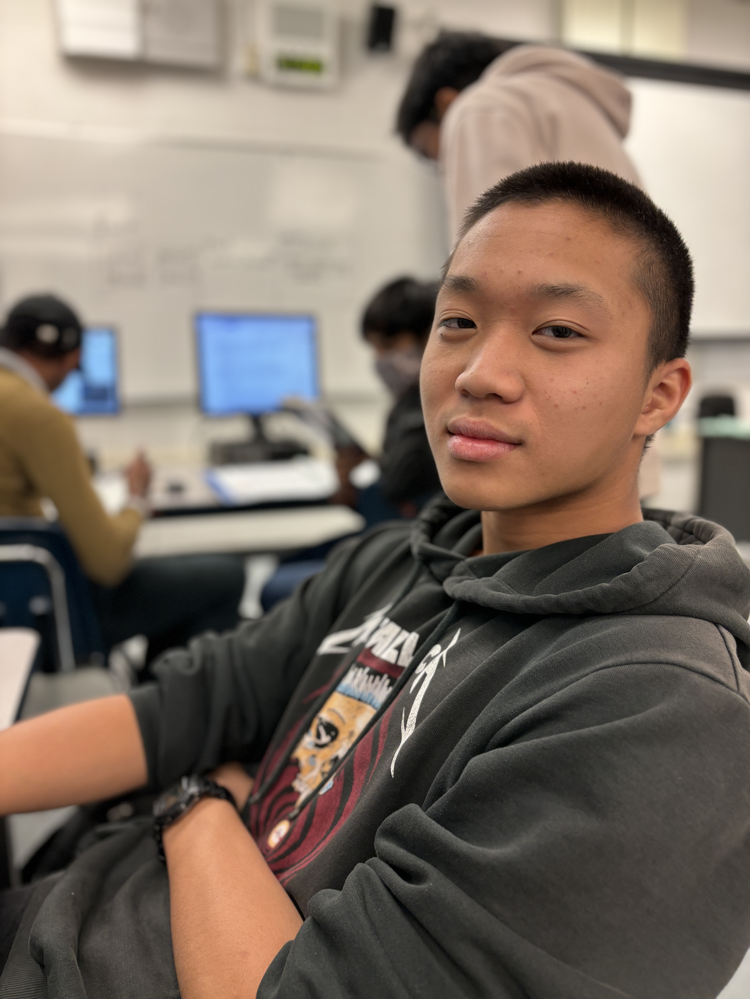
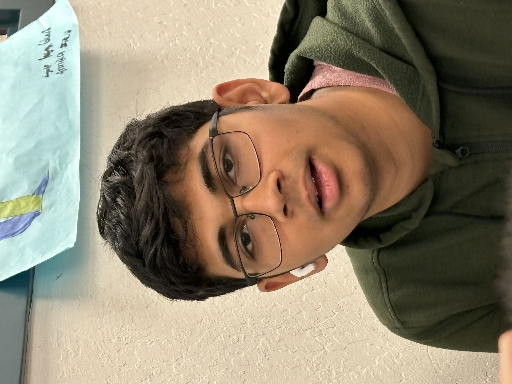

Meet the Team
Click a picture to learn more about the person.

Name
Title
A brief description.
-
 Back-end developer
Yashwanth Venkata Sunkesula is out backend developer. From the entire group he gives off the main protagonist vibes. His hobbies are playing football, reading, and listening to music in his freetime or while he is studying. He enjoys AP CSP because “We have a lot of fluidity with projects” and has an intermediate knowledge in coding (he knows python and java). After graduating High school he hopes of going to UCLA and WILL force Aryan, his sidekick, to come with him.
Back-end developer
Yashwanth Venkata Sunkesula is out backend developer. From the entire group he gives off the main protagonist vibes. His hobbies are playing football, reading, and listening to music in his freetime or while he is studying. He enjoys AP CSP because “We have a lot of fluidity with projects” and has an intermediate knowledge in coding (he knows python and java). After graduating High school he hopes of going to UCLA and WILL force Aryan, his sidekick, to come with him.
Contributions
- Website
- - Helped with database
- - Uploaded everything to filezilla
- - Some project management
- Bluetooth nerf gun
- - researched the topic, helped with wiring and 3d printing
- AI Project
- -
-
 Webmaster
Aryan Bhagia is our one and only Webmaster. He juggles many things on his plate between Mock Trial, AP Bio, Book club, and somehow is still not able to hang out with friends. But out of all the classes and extracurricular activities he is taking AP CSP is his favorite because “The fact that we get to manage ourselves”. He knows Python and HTML. His hobbies are sleeping, video games, chess, sleeping, books, science, and did I mention sleeping. He has no choice on which college he wants to go to because Yash forced him to go to UCLA.
Webmaster
Aryan Bhagia is our one and only Webmaster. He juggles many things on his plate between Mock Trial, AP Bio, Book club, and somehow is still not able to hang out with friends. But out of all the classes and extracurricular activities he is taking AP CSP is his favorite because “The fact that we get to manage ourselves”. He knows Python and HTML. His hobbies are sleeping, video games, chess, sleeping, books, science, and did I mention sleeping. He has no choice on which college he wants to go to because Yash forced him to go to UCLA.
Contributions
- Website
- - project planning
- - a little bit of site design
- Bluetooth nerf gun
- - Aiding in 3D printer repair
- - gathering materials
- AI Project
- -
-

Front-end developer
In his free time he enjoys playing video games, talking to friends, and reading a good book. He is interested in going to Carnegie Mellon or Berkeley after he completes high school. He enjoys AP CSP because there is “a lot of creativity that can be implemented”.
Contributions
- Website
- - Made the home page, project page, (as well as basically every other page), creating a visually appealing website
- - Made the naviagation bar with leads to easier access to pages
- - Created the about me for every member
- - Made the database along with Yash
- Bluetooth nerf gun
- - researched how to make the nerf gun, and helped with wiring
- AI Project
- -
-

Content Specialist
He enjoys AP CSP because of “free time, it's basically flex”. His hobbies are video games, drawing, and listening to music. But what college he wants to go to he still isn’t quite sure and still is wondering what he wants to be. He is still learning coding and is practicing to be a front-end developer.
Contributions
- Website
- - ideas + content
- Bluetooth nerf gun
- - sat around
- AI Project
- -
-

Tech Support
Ismail Patel is the Tech support. He is currently 16, and he has a bit of experience in Java and Python. But he enjoys AP CSP because he has many friends here. Other than friends he enjoys board games and video games. He hopes that he will be able to get into Berkeley because that is where one of his family members went.
Contributions
- Website
- - helped with minor technical issues + ideas
- Bluetooth nerf gun
- - research + wiring + 3d printing
- AI Project
- -